|
Scott Merrill, CFA, FRM
I’m from Meredith, New Hampshire, and currently a third-year PhD student advised by Shashank Srivastava. My research focuses on LLM interpretability and alignment, with a particular emphasis on understanding deceptive behavior in large language models. I’m interested in when and why deception arises, how it can be systematically detected, and what interventions or training mechanisms might mitigate it. More broadly, I aim to develop mechanistic insights that translate into concrete improvements in model alignment and safety.
|

|
Publications |
|
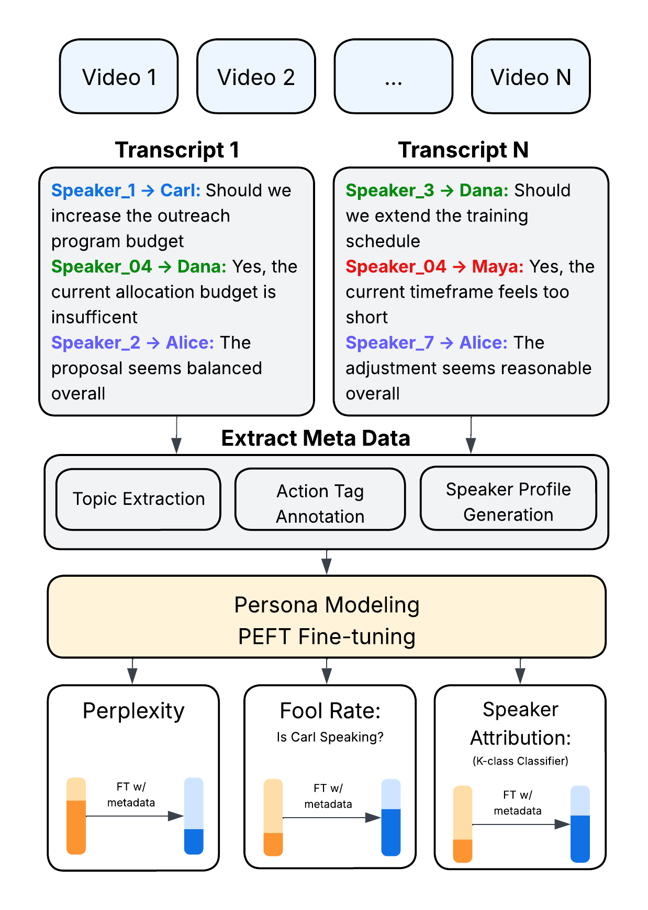
|
Point of Order: Action-Aware LLM Persona Modeling for Realistic Civic Simulation
Scott Merrill, Shashank Srivastava Submitted to ACL, January, 2026 Github / arXiv Large language models (LLMs) offer unprecedented opportunities to simulate multi-party deliberation in real-world settings, but realistic persona-aware modeling has been limited by the lack of speaker-attributed data and structured procedural information. This work presents a complete, reproducible pipeline for collecting, processing, and modeling multi-speaker deliberations. Publicly available Zoom recordings are transformed into speaker-attributed transcripts using multimodal diarization, and enriched with structured metadata including personas, agenda topics, and turn-level action tags. Parameter-efficient fine-tuning enables LLMs to generate dialogue that is both plausible and consistent with individual speaker styles. Evaluation across three newly released local government datasets—school board, municipal council, and appellate court meetings—demonstrates substantial reductions in perplexity, increased classifier-based fooling, and improved speaker-attribution accuracy. Human studies confirm that simulations are largely indistinguishable from real interactions, and temporal guidance enhances procedural coherence. The results provide a practical recipe for researchers to collect large-scale data, validate models, and run hyper-realistic simulations of real-world deliberative processes. |
|
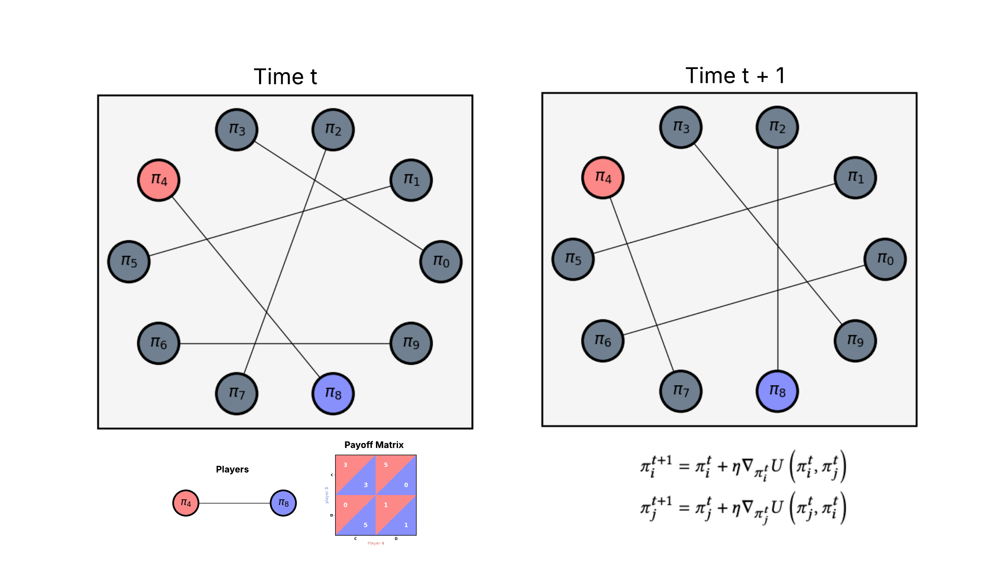
|
Population-based learning in simple stochastic games
Scott Merrill, Alex McAvoy Submitted to AAMAS, January, 2026 Github / arXiv Conflicts of interest are ubiquitous in populations. When individuals interact, there are often discrepancies between what is best for the individual and what is best for the larger group. Social dilemmas capture the differing incentives between individuals and groups, and specific models like the prisoner's dilemma have been studied extensively in both evolutionary game theory and multi-agent reinforcement learning. However, at the intersection of these fields lies the understudied question of how population-level stochasticity affects collective learning dynamics and emergent behaviors. In this work, we study the impact of random interactions in populations of greedy (purely self-interested) agents by examining simple, mixed-motivation stochastic games. Despite the fact that naive self-play leads to inefficient outcomes in cooperative social dilemmas, we find that stochasticity in interaction partners within a population can reverse these outcomes, leading to much larger rewards, on average. This behavior is consistent across a variety of social dilemmas, and it suggests that transient (rather than stable) encounters can serve as a mechanism for eliciting prosocial behaviors in a population, even when all agents are self-interested. |
Projects |
|
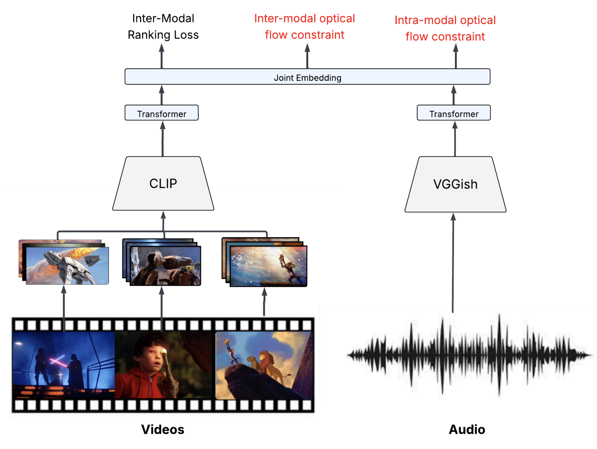
|
Optical Flow Matching for Video-to-Music Retrieval
Scott Merrill Report / Github This paper tackles the challenging task of video-to-music retrieval (VMR), which involves automatically selecting the most suitable music for a given video clip. Extending the VM-Net framework, this work addresses two key limitations: the use of static, time-agnostic feature representations and the assumption of a single ground-truth audio track per video. The core hypothesis is that high-motion video segments should correspond to high-energy, fast-paced music. To capture this dynamic, the paper introduces a novel segmentation method based on optical flow to detect "regime changes" in video motion. A new loss function is proposed to align video and audio segments according to optical flow-derived motion rankings. Temporal dependencies in both modalities are modeled using transformer encoders, replacing VM-Net’s simpler fully connected architecture. Evaluations on the HIMV-50K and SymMV datasets show that while the proposed model (OF-VM- Net) lags behind VM-Net on standard retrieval metrics like Recall@k and FAD, it consistently outperforms on the AV-ALIGN metric—highlighting improved temporal synchronization. Notably, OF-VM-Net demonstrates greater robustness to distribution shifts, showing less performance drop on the out-of-distribution SymMV dataset. All code for this project is publicly available at: https:// github.com/smerrillunc/VMR. |
|
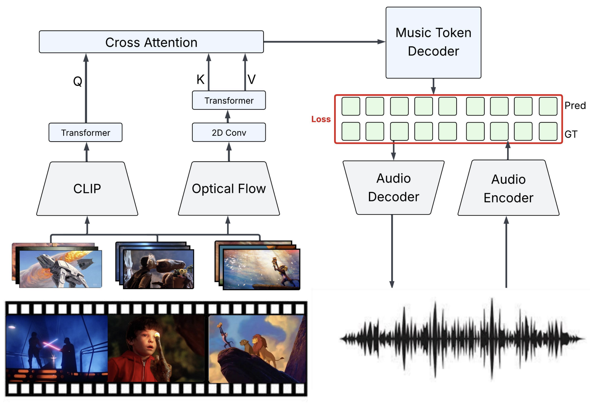
|
Video-to-Music Generation
Scott Merrill, Titus Spielvogel Report / Poster / Github / Demo 1 / Demo 2 Music plays a vital role in enhancing video content, yet automatically generating background music that aligns with a video’s pacing, tone, and narrative remains a com- plex challenge. This work tackles the task of video-to-music generation by proposing a novel method that balances fine-grained temporal synchronization with overall musi- cal coherence. Our approach combines optical flow–based motion embeddings with CLIP-derived visual embeddings through a cross-attention mechanism, enabling the model to capture both dynamic motion and high-level semantic con- text. These fused representations condition an autoregres- sive transformer decoder to generate music tokens aligned with the visual input. Remarkably, our method remains competitive with prior work such as VidMuse, despite using five times fewer parameters and being trained on less than one-eighth the amount of data. These findings highlight the critical importance of high-quality, tightly aligned training data, demonstrating that a well-curated subset of the V2M dataset can compensate for smaller dataset size and model scale. |

|
Multi-Level Selection for OOD Ensembles
Scott Merrill, Hung-Tien Huang, Report Traditional machine learning models are trained under the assumption that the data used for training the model will not change when the model is used for inference. However, such assumption might not hold during inference as distribution shift might occur. The Out-of-Distribution (OOD) generalization task aims to train trustworthy worthy models under any hypothetical distribution shift. Prior works tackle OOD generalization from different perspective, including but not limited to representation learning, self-supervised learning, and model ensembeling [Liu et al., 2021]. In this work, we apply genetic algorithms to construct ensembles where the the training data and features of the underlying models are jointly optimized. Given an ensemble produced by genetic algorithm, we further propose a post-hoc mixture of expert training procedure that further improve OOD generalization performance. |
|
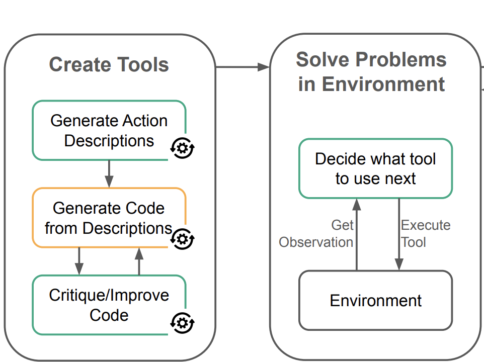
|
Skill-Acquisition in LLM Agents
Scott Merrill, Titus Spielvogel, Isai Garcia-Baza Report / Slides We investigate how Large Language Model Agents (LLM Agents) can acquire new skills from a set of primitive actions that help to solve tasks in a specific environment. We present four changes to LearnAct (Zhao et al., 2024). Our changes mostly target the tool creation process. We evaluate our modifications on the Gripper environment and compare them to LearnAct. To investigate the effect of each proposed mod- ification we perform an ablation study. |
|
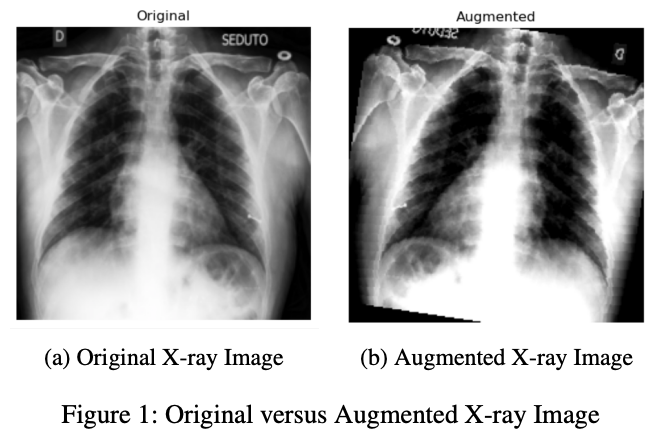
|
Securing AI-Driven Medical Diagnostics: Detecting Adversarial Examples in Healthcare Imaging
Saurav Raj Pandey, Scott Merrill, Report Machine Learning (ML) models have revolutionized health- care diagnostics but are vulnerable to adversarial attacks, where subtle input modifications can lead to inaccurate diag- nosis. In this work, we evaluate the vulnerability of AI-driven medical diagnostics to gradient-based attacks – Universal Ad- versarial Perturbation (UAP) and Projected Gradient Descent (PGD). We find a roughly 36% and 60% drops in accuracy in popular deep learning models like VGG16 and Efficient- NetB0 respectively due to the adversarial perturbations. To mitigate these threats, we build a simple yet accurate detection framework that is 95% accurate for identifying UAP pertur- bations and 72% for PGD perturbations. Our findings support the urgent need for robust defenses to secure AI systems in high-stakes areas such as healthcare. |
|
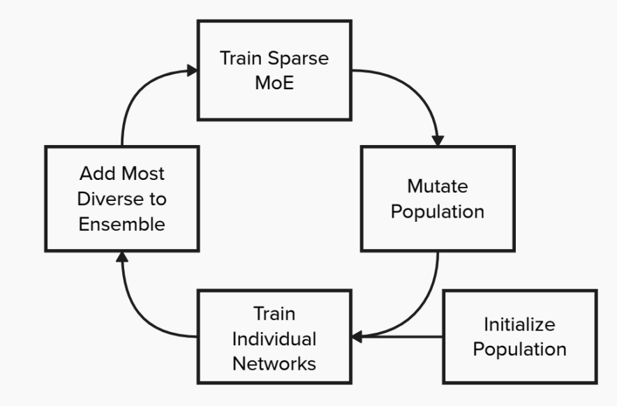
|
Evolutionary Approaches for OOD Ensembles
Scott Merrill, Report Traditional Machine Learning (ML) models are trained under the assumption that the training data and testing data follow the same distribution. However, such assumption might not hold in practice. The Out-of-Distribution (OOD) generalization task aims to train trustworthy worthy models under any hypothetical distribution shift. One approach to this problem may be to ensemble a diverse collection of models. Given each individual model is reasonably accurate and produces independent errors with respect to the other models, mistakes may cancel out leading to an ensemble with good generalization ability Johansson et al. [2007]. This paper explores several approaches based on Evolutionary Algorithms (EA) to construct ensembles for OOD generalization. In total, four algorithms are considered which can be broadly categorized based on the evolutionary fitness function they are optimizing. Two algorithms attempt to optimize for Quality Diversity (QD) Pugh et al. [2016]; that is, models that are both accurate and novel. The second class of algorithms attempts to optimize a fitness function to approximate the true OOD accuracy. We compare the two approaches and comment on the appropriateness of each objective for OOD generalization. |
|
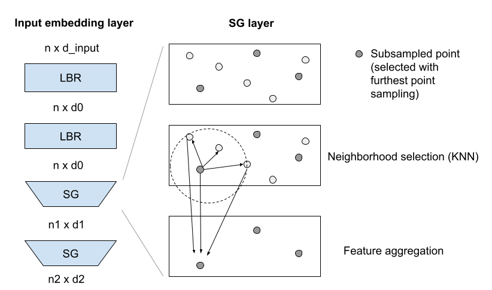
|
Deep Learning for Point Cloud Classification
Anirudh Patil, Johnathan Leung, Scott Merrill, Luke Duan Report Recent advancements in remote sensing technologies have led to the growing popularity of three-dimensional (3D) representations of objects and scenes across industries, including autonomous driving, robotics, and medical imaging. Point clouds, a common format for storing 3D data from sensors, present unique challenges for applying deep learning techniques, which have demonstrated groundbreaking results in 2D image segmentation and classification. A key challenge in working with point clouds lies in their lack of a prescribed point order, requiring models to enforce permutation invariance—ensuring predictions remain consistent regardless of point arrangement. Additionally, constructing local features in point clouds is complicated by factors such as variable point densities and the need for efficient aggregation of neighborhood information. This report explores state-of-the-art methods for addressing these challenges, with a particular focus on Transformer-based architectures. Initially developed for natural language processing, the Transformer model has been successfully applied to point clouds to model local contexts and point relationships. Despite its promising results, there remain areas for improvement, such as enhancing local feature aggregation, optimizing embedding modules, and increasing the efficiency of the attention layer. We investigate these challenges and propose potential improvements in the Point Cloud Transformer model to enhance 3D point cloud classification accuracy while maintaining computational efficiency. |

|
Ensemble Pruning for OOD Generalization
Scott Merrill Report Out-of-distribution (OOD) generalization presents a significant challenge in ma- chine learning, especially for tabular data, which is prevalent in critical domains like healthcare and finance. A key obstacle in improving OOD performance is the lack of reliable proxy measures for OOD behavior. While in-distribution (ID) metrics, such as accuracy, are commonly used for model selection, they often fail to correlate well with OOD performance. In this work, we introduce a systematic framework for identifying OOD proxy metrics that can be utilized for both model calibration and selection across a wide range of downstream tasks. We demonstrate how these OOD proxies can be integrated into an evolutionary ensemble pruning algorithm. Our experiments show that optimizing for validation AUC leads to overfitting to ID data, resulting in suboptimal performance in real-world settings. In contrast, optimizing for our proposed OOD metrics results in ensemble models that are more robust to distribution shifts. These findings highlight the need for OOD-aware model selection strategies and provide practical insights for building models that perform well across environments. |
|
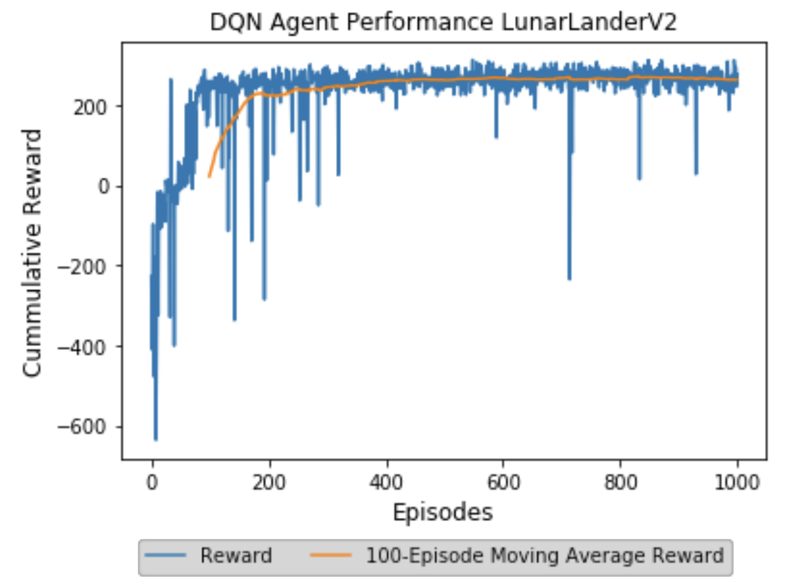
|
Deep Q-Learning
Scott Merrill Report By rewarding desired behaviors and penalizing unwanted actions, Reinforcement Learning applies concepts from classical conditioning to train agents to optimally navigate an environment. In 1992, Chris Watkins presented the proof of convergence of a technique known as Q-Learning whereby agents can be conditioned to identify and exploit the series of actions that maximizes their cumulative reward [2]. Such techniques, however, require finite state spaces and thus are applicable only to select domains. Deep Q-Learning is an extension of the original Q-Learning algorithm that is scalable to infinite state-space environments. While Deep-Q Learning algihm ae gaaeed to converge, several strategies can be implemented to make convergence more likely [1]. In this paper we demonstrate the training of a Deep Q- Network to teach a virtual agent to le OeAI Gm LunarLander-v2 environment. We demonstrate the use of experience replay, fixed Q-Targets and 𝜖 −greedy exploration which help support convergence and additionally explore how hyperparameters can be tuned to enable efficient learning. This work serves to demonstrate the efficiency of properly parameterized Deep Q-Networks and highlight the broadened class of infinite state space problems they can solve. |
|
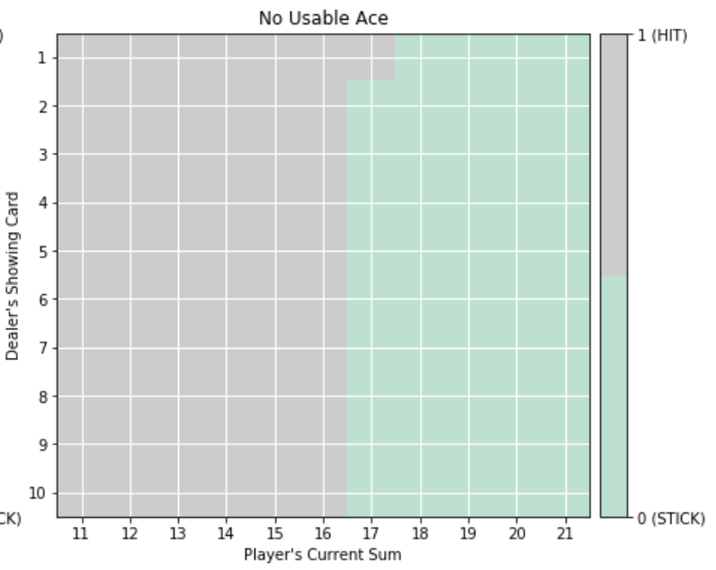
|
Markov Decision Processes
Scott Merrill Report Unlike other Machine Learning paradigms concerned with prediction or classification, Reinforcement Learning (RL) problems seek to train agents to act optimally by rewarding desired behaviors and punishing unwanted actions. RL typically requires casting the problem into a Markov Decision Process (MDP), which may not be intuitive or well-suited for all problems. However, properly framing a task as a RL problem often enables for efficient solutions. As such, RL techniques are used widely in domains ranging from supply chain management to robotic motion. This paper seeks to frame two complex problems as MDPs such that they can be solved efficiently in the RL framework. Three RL algorithms derived from Richard Bellman’s dynamic programming equations will be used to solve two MDPs with very different properties. In particular, policy iteration (PI), value iteration (VI) and Q-Learning (QL) will each be considered; the performance of each of these algorithms will be analyzed as to determine their properties and the types of problems in which each algorithm may be preferred. |
|
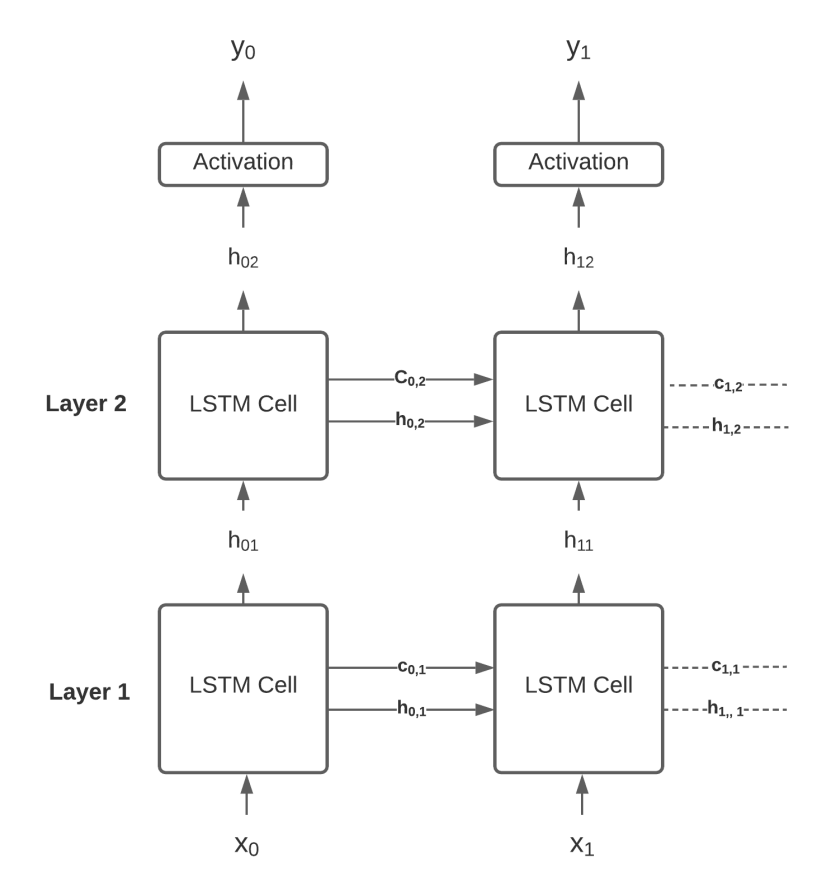
|
Predicting Win Probability for NBA Games
Scott Merrill, Jiajie Chen, Mohammad Suffian Hamzah, Daniel Allen Lepkofker Report With recent legislation allowing sports gambling in some US states, there is ample opportunity to bet and make money on sportsbooks’ quoted odds and inefficiencies in their cal- culations. In this paper, we explore different time-dependent machine learning models and conduct experiments to deter- mine their efficacy in predicting the outcome of NBA games. We trained models to evaluate the outcome of each game by examining the participating teams’ previous 10 games. We further tune the hyper-parameters of these models, apply regularization to prevent overfitting, experiment with vari- ous loss functions and devise self-supervision tasks to aug- ment their training. We finally show how our models can be ensembled to further improve performance and outperform popular modeling methods applied in the sports betting do- main. |
|
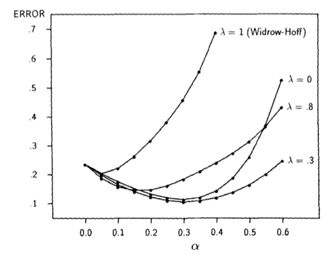
|
Temporal Difference Prediction
Scott Merrill Report Prediction applies to nearly every domain and helps determine the future behavior of an unknown system given the present state. While orthodox methods solve prediction problems by minimizing an error term between predicted and observed outcomes, temporal-difference (TD) methods minimize error between successive predictions. Prior to Sutton’s 1988 paper on TD learning, the performance and statistical properties of TD methods remained unexplored [1]. Still, the technique showed promise; with impressive implementations in Samuel’s checker player and Holland’s Bucket Brigade a formal investigation into the new learning technique was certainly warranted. With empirical and theoretic evidence, Sutton proves not only the convergence of TD strategies, but also their optimality as compared to traditional supervised learning methods; they converge quicker, produce more accurate predictions and require less computational power. In this paper, we attempt to replicate Sutton’s experiments and comment on the empirical accuracy and computational advantages of TD methods. |
|
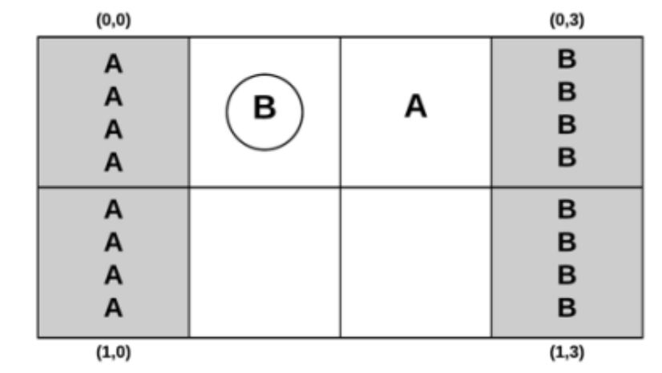
|
Correlated Q-Learning
Scott Merrill Report Reinforcement Learning (RL) is commonly formulated as a Markov Decision Process (MDP), enabling a single agent to learn a sequence of actions that maximizes cumulative reward. However, this framework fails to account for environments in which multiple agents interact, each influencing the environment through cooperative or competitive behavior. Such multiagent settings are more accurately modeled as Markov Games and require solution concepts beyond single-agent optimality. Existing approaches for multiagent RL exhibit notable limitations: Littman’s Friend-or-Foe-Q (FF-Q) is restricted to two-player zero-sum games, while Hu and Wellman’s Nash-Q applies to general-sum games but converges only under the assumption of a unique Nash equilibrium. To address these constraints, Greenwald and Hall proposed Correlated-Q (CE-Q), which generalizes both FF-Q and Nash-Q by converging to correlated equilibria and demonstrating empirical convergence across several Markov Games. In this paper, we replicate Greenwald’s Soccer Game experiment to evaluate the convergence behavior of CE-Q in zero-sum environments and assess its suitability for broader general-sum multiagent settings. |
|
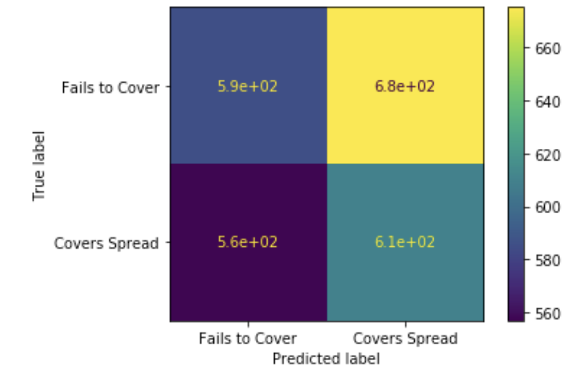
|
Supervised Learning
Scott Merrill Report The class of supervised machine learning algorithms attempt to approximate a function that maps inputs to labeled outputs. A wide range of supervised algorithms exist, each with unique characteristics. The appropriate algorithm for a given problem is thus dependent on the amount and type of input data as well as training and testing constraints. This project explores the properties of several supervised learning algorithms on two datasets to examine the types of problems certain algorithms may outperform. We specifically train Decision Tree, AdaBoost, Neural Network, Support Vector Machine and K- Nearest Neighbor models and explore the effects various hyperparameters have on the bias-variance tradeoff. |
|
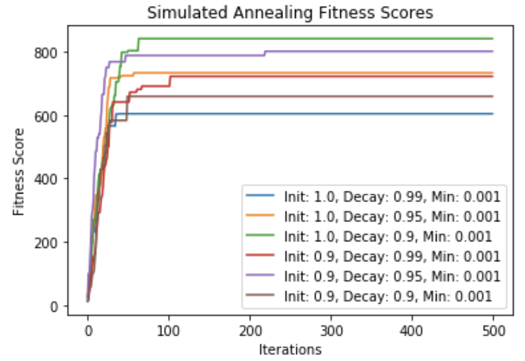
|
Randomized Optimization
Scott Merrill Report Optimization algorithms seek to find a set of inputs that maximize or minimize the value of a given objective function. These techniques are particularly useful when objective functions are complex, multidimension, or lack a closed form solution. Randomized optimization methods make repeated random steps to incrementally improve a solution. Unlike gradient-based optimization methods, randomized optimization techniques can be applied to discontinuous, non-differentiable objective functions and thus are applicable to many more domains. This paper explores several toy examples of discontinuous objective functions to compare the performance of popular randomized optimization algorithms. In particular, we look at Random Hill Climbing (RHC), Simulated Annealing (SA), Genetic Algorithms (GA) and Mutual-Information-Maximizing Input Clustering (MIMIC) to identify the types of problems in which each of these algorithms excel. Further, the hyperparameters of each algorithm will be altered to identify their effects on objective function optimization and run time. Finally, we will apply RHC, SA and GA to a continuous objective function—particularly the loss function of the Neural Network (NN) used in Assignment 1—and compare their performance to gradient decent. We will then comment on when randomized optimization algorithms may be preferred to gradient- based methods in continuous domains. |
|
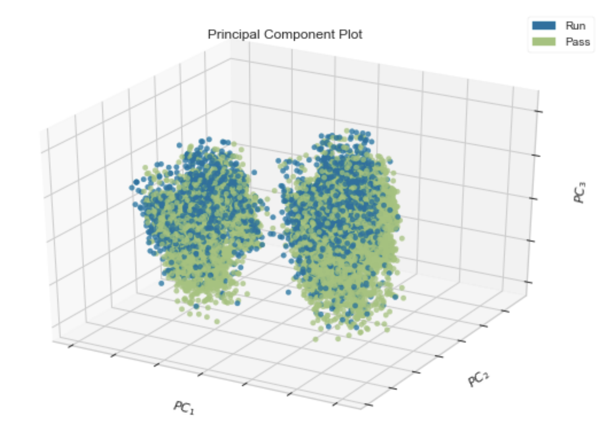
|
Unsupervised Learning and Dimensionality Reduction
Scott Merrill Report This paper investigates unsupervised learning through the tasks of clustering and dimensionality reduction, where models operate solely on input features without labeled data. We evaluate k-means (KM) and Gaussian Mixture Models (GMM), representing hard and soft clustering approaches, respectively, across two datasets differing in size, dimensionality, multicollinearity, and outliers, and assess their effectiveness as feature engineering methods by using cluster outputs to train a neural network (NN). Additionally, we apply principal component analysis (PCA), independent component analysis (ICA), random projections (RP), and recursive feature elimination (RFE) to reduce dimensionality, rerun clustering on the transformed data, and train NNs on each reduced representation. Performance comparisons are used to analyze the suitability of each clustering and dimensionality reduction technique and to identify conditions under which specific methods are preferred. |
Miscellanea |
Teaching |
Graduate Student Instructor, DATA 140 Spring 2026 (Slides)
Graduate Student Teaching Assistant, DATA 140 Fall 2025 Graduate Student Teaching Assistant, DATA 140 Spring 2024 Graduate Student Teaching Assistant, DATA 140 Fall 2024 |
Certifications and Liscenses |
CFA: Passed All exams on the first try scoring above the 90th percentile on each.
FRM: Passed all exams on the first try scoring in the top quartile on each exam. SIE: (expired). Series 7: (expired). |